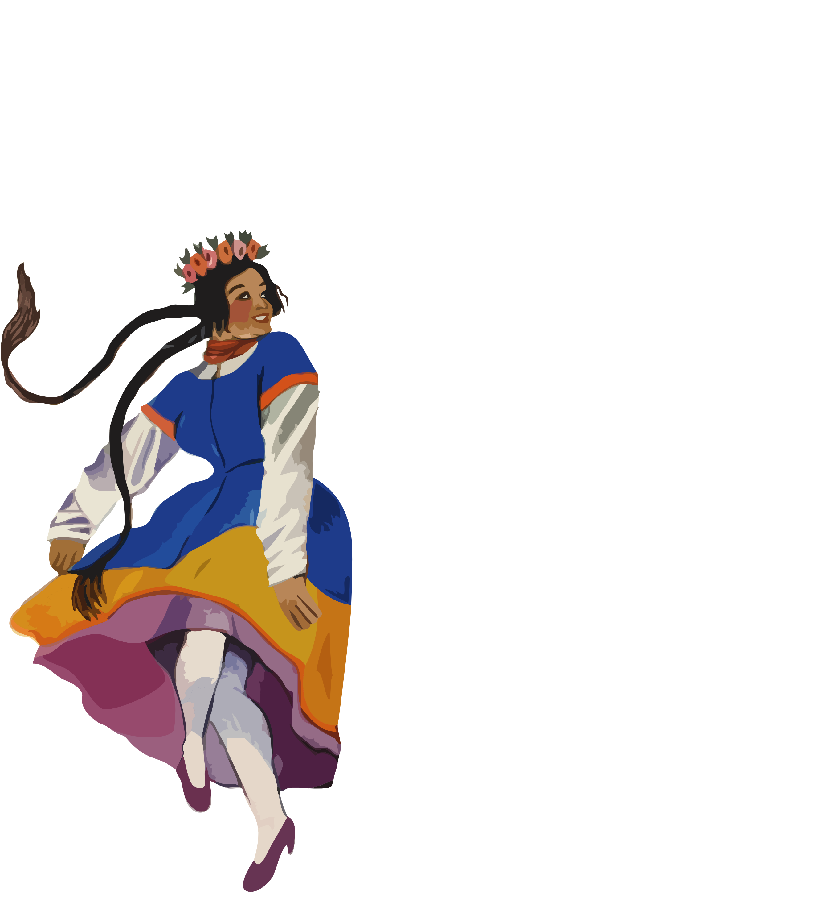
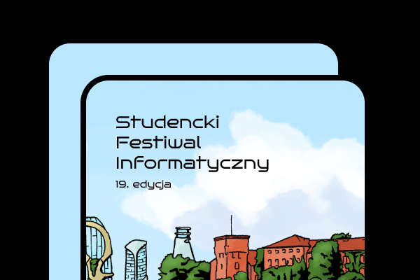
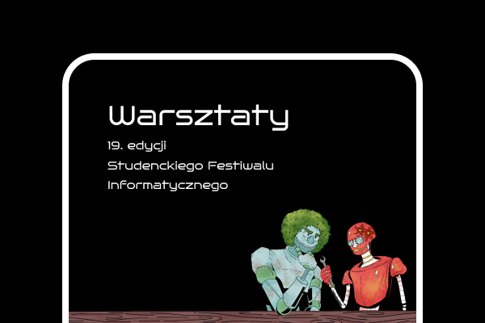
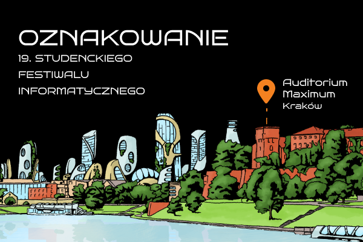

discover_tune
menu
close
text_increase
text_decrease
wb_sunny
dark_mode
Patrycja
Bobowska
aspiring ux/ui designer
creative
insightful
detail-oriented
empathic
tasteful
well-organized
reliable
extroverted
communicative
my work
about me
contact
close

me
UX/UI
My work
chevron_left
01
SFI website

02
SFI workshops

03
SFI marking

04
SFI website
05
SFI workshops
chevron_right